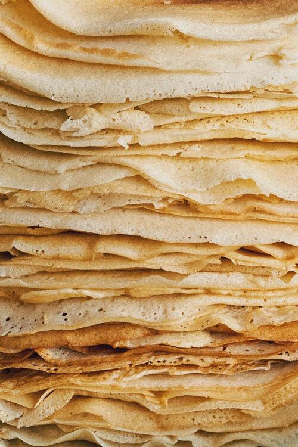

Swedish Pancakes

Photo by Maria Borisenko via Pexels.
Description
This is my family's Swedish pancakes recipe that has been passed down from my paternal great-great+ grandmother. It's simple, yet delicious!
Ingredients
- 4 eggs
- 1 cup flour
- 1 & 1/3 cup milk
- 1 teaspoon sugar
- dash of salt
Steps
- Add all ingredients except flour to blender.
- Blend for a few seconds until mixed.
- Slowly add flour to blender, mixing until it's incorporated, but ensuring not to mix for too long.
- Heat pan on medium heat and melt enough butter to lightly coat the pan.
- Add about a quarter cup of batter to the pan, and then tilt the pan in a circle so the batter spreads evenly.
- When the batter becomes opaque (not shiny) on top, use a spatula to gently lift the edges, and then flip the pancake.
- Cook for a short amount of time, until slightly browned, and then remove from the pan.
- Repeat with remaining batter, melting butter in the pan before each new pancake.
- Top with your favorite toppings! Some popular options are: maple syrup, powdered sugar, granulated sugar, cinnamon, lingonberries, or other berries!